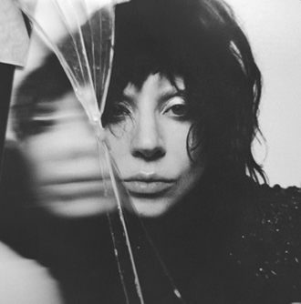
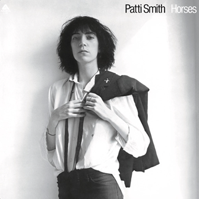
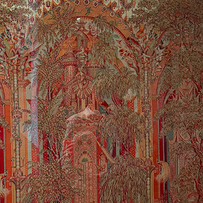

* Mother Mary has been top of mind basically every day since I saw it a couple weeks ago. The whole visual and sonic aesthetic of this movie was so strong and compelling to me. And, needless to say, I love the role Red played in this story. Counting the days until Anne Hathaway becomes a celestial Pop Star.
* Mayhem has been one of those albums that I think about all the time with major reverence. There has been something to learn artistically from every element and moment that has come from this era. I also think the way Gaga was able to give us multiple versions of the same songs with entirely different feeling and sound was super cool. Long Live Lady Gaga.


* This album in particular has become integral to my experience this past year. I think Land specifically is a contender for one of my favorite songs of all time. It's such a cool blend of punk rock and poetry.
...The waves were coming in like Arabian stallions gradually lapping into seahorses...
* This is some sort of tapestry from LACMA in Los Angeles. I had 30 minutes to run through the entirety of the David Geffen Galleries so I took this picture in passing to revisit. It unfortunately doesn't quite do the work justice; in reality this piece has an amazing use of color and is incredibly detailed. There are worlds inside of worlds inside of worlds to get lost in in this work. I don't think I've seen anything like it with my own eyes before.

* A Gentleman in Moscow was a very serendipitous read. The writing is just as clever and self-aware as Salman Rushdie (who is among my –perhaps even thee– favorites), but it was also very whimsical and optimistic. I could only hope to become such a gentleman. It also makes me want to see Moscow terribly now.
* Maria (2024 film) was absolutely breathtaking to me. I thought Angelina Jolie’s performance was amazing, and the sets and the shooting and the color palette of this movie were just beyond beautiful. I also thought green and red were an unsalvageable pair until I saw what could be done with them in this movie. I was actually in the mood to watch Amélie the night I ended up watching this, but funny enough is that this movie was very similar to Amélie.